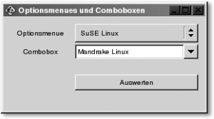

|
|
|
Der Aufwand mit GtkItemFactory (im Gegensatz zum anderen Weg) ist minimal. Gewöhnlich reichen zum Erstellen folgende drei Schritte aus:
Um den ersten Schritt durchzuführen, müssen Sie erst wissen, welche Einträge in der Struktur GtkItemFactoryEntry vorhanden sind, um ein entsprechendes Array mit Werten zu belegen. Jedes dieser Mitglieder ist Teil eines Menüelementes. struct _GtkItemFactoryEntry {
gchar *path;
gchar *accelerator;
GtkItemFactoryCallback callback;
guint callback_action;
gchar *item_type;
};
Mit path geben Sie den Menüpfad an, was wie bei einer gewöhnlichen Verzeichnisstruktur gemacht wird. Mit /Datei/Speichern unter bekommen Sie z. B. einen Menüeintrag Speichern unter, der sich unter dem Eintrag /Datei befindet. Natürlich wird mit /Datei/Speichern unter nur der Name Speichern unter angezeigt. Unterstriche können hierbei auch gleich verwendet werden. Soll z. B. der erste Buchstabe von Speichern unter unterstrichen werden, dann gehen Sie so vor: /Datei/_Speichern unter. Mit der zweiten Strukturvariablen geben Sie den Accelerator (Shortcut) des Menüeintrags an. Wollen Sie keinen verwenden, können Sie hier auch NULL angeben. Als Shortcut kommt hierbei entweder der String (!) eines einzelnen Zeichens in Frage oder eine Kombination von modifizierten Tasten mit einem einzelnen Zeichen. Folgende Modifizierer stehen Ihnen dabei zur Verfügung:
Natürlich sind auch mehrere Kombinationen wie z. B. "<SHIFT><ALT><CONTROL>Z" möglich. Die nächsten beiden Strukturvariablen sind für die Callback-Funktion gedacht. Auf die Callback-Funktion selbst wird gleich extra eingegangen. Mit item_type geben Sie an, was für einen Typ von (Menü-)Widget Sie in den Container packen wollen. Folgende Typen stehen hierbei zur Auswahl:
Beschreibung der Callback-FunktionDie Callback-Funktion von GtkItemFactoryEntry kann zwei verschiedene Formen haben und ist abhängig vom Parameter callback_action. Ist der Wert 0 – wie im Beispiel angewendet –, dann können Sie folgende Callback-Funktion verwenden: void my_callback_func( void ); Ansonsten ist folgende Syntax vorgesehen: void callback( gpointer callback_data, guint callback_action, GtkWidget *widget); callback_data ist ein Zeiger auf übergebene Daten – callback_action entspricht demselben Wert der gleichnamigen Strukturvariablen von GtkItemFactoryEntry. widget ist ein Zeiger auf ein Menüelement.
Nachdem Sie die Bedeutung der einzelnen Strukturvariablen von GtkItemFactoryEntry kennen, können Sie ein Array mit diesen Mitgliedern für Ihre Menübar erzeugen. static GtkItemFactoryEntry menu[] = {
{"/_Datei", NULL, 0, 0, "<Branch>"},
{"/Datei/_Neu", "<control>N", menuitem_auswerten, 0,
"<StockItem>", GTK_STOCK_NEW},
{"/Datei/_Oeffnen", "<control>O", menuitem_auswerten, 0,
"<StockItem>", GTK_STOCK_OPEN},
{"/Datei/_Speichern", "<control>S", menuitem_auswerten, 0,
"<StockItem>", GTK_STOCK_SAVE},
{"/Datei/Speichern unter...", NULL, menuitem_auswerten, 0,
"<StockItem>", GTK_STOCK_SAVE},
{"/Datei/sep1", NULL, menuitem_auswerten, 0,
"<Separator>"},
{"/Datei/_Ende", "<control>E", end, 0, "<StockItem>",
GTK_STOCK_QUIT},
...
Je nachdem, wie Sie die Elemente des Menüs festgelegt haben, können Sie ein neues Menü mit der Funktion gtk_item_factory_new() erzeugen. GtkItemFactory* gtk_item_factory_new( GtkType container_type, const gchar *path, GtkAccelGroup *accel_group ); Mit dem container_typ geben Sie an, was für ein Menü Sie wollen. Hierfür sind folgende (selbst sprechende) Angaben möglich:
Mit path geben Sie die Wurzel des Menüs, eingeschlossen von "<root>", an. Dieser Name ist auch wichtig für den Accelerator und sollte daher einzigartig für jedes Menü und für jedes Programm sein. accel_group ist ein Zeiger auf GtkAccelGroup. Dieses Widget ist ebenfalls nötig, da das GtkItemFactory-Widget beim Erzeugen die Accelerator-Tabelle setzt. Jetzt der letzte Schritt: Die Menüelemente des Arrays GtkItemFactoryEntry müssen noch in ein Widget »konvertiert« werden. Hierzu wird die Funktion gtk_item_factory_create_items() verwendet. void gtk_item_factory_create_items( GtkItemFactory *ifactory, guint n_entries, GtkItemFactoryEntry *entries, gpointer callback_data ); ifactory ist ein Zeiger auf das zuvor erzeugte GtkItemFactory-Widget. n_entries enthält die Anzahl der Einträge im GtkItemFactoryEntry-Array. entries ist ein Zeiger auf das Array. Mit callback_action können Sie alle Callback-Funktionen in entries mit Daten versorgen. Meistens wird dabei NULL angegeben. Um die Menübar anschließend auch wie jedes andere Widget packen zu können, benötigen Sie die Kennungs-ID der Menübar. Diese können Sie mit der folgenden Funktion ermitteln: GtkWidget* gtk_item_factory_get_widget( GtkItemFactory *ifactory, const gchar *path ); ifactory ist das Element, von dem Sie die Kennungs-ID haben wollen, und path ist der Menüpfad des Widgets, den Sie ermitteln wollen. Da Sie für das Packen das ganze Menü verwenden wollen, sollten Sie den Pfad verwenden, den Sie als zweiten Parameter der Funktion gtk_item_factory_new() verwendet haben. Und, um bei der Auswahl eines Widgets in der Callback-Funktion den kompletten Pfad zu ermitteln, steht Ihnen die Funktion gtk_item_factory_path_from_widget() zur Verfügung: G_CONST_RETURN gchar* gtk_item_factory_path_from_widget ( GtkWidget *widget ); Als Rückgabewert erhalten Sie hierbei den vollen Pfad zum Menüelement (Widget), den Sie beim Erzeugen angegeben haben. Konnte kein Pfad ermittelt werden, wird NULL zurückgegeben. Denn letztendlich ist jetzt jeder einzelne Menüeintrag ein eigenes Widget. Wie schon erwähnt, ist es auch möglich, Callback-Funktionen nachträglich – sprich, nicht im Array GtkItemFactoryEntry – zu setzen. Dies ist relativ einfach mit der bereits gezeigten Funktion gtk_item_factory_get_widget() möglich – die Ihnen, wie bereits erwähnt, die Kennungs-ID eines Widgets (was die einzelnen Menüeinträge letztendlich auch sind) zurückgibt. Sie müssen nur unter Angabe des zweiten Parameters das Menüelement angeben, von dem Sie die Kennungs-ID haben wollen. Für den Menüpunkt /Datei/Ende würde eine Callback-Funktion z. B. folgendermaßen eingerichtet werden: g_signal_connect ( G_OBJECT(gtk_item_factory_get_widget(itemfac, "/Datei/Ende")), "activate", G_CALLBACK (end), NULL); Natürlich lässt sich dies auch mit g_signal_connect_swapped() in »einem Rutsch« realisieren: g_signal_connect_swapped( G_OBJECT( gtk_item_factory_get_widget(itemfac, "/Datei/Ende") ), "activate", G_CALLBACK (gtk_widget_dzhg67tr65t67testroy), G_OBJECT(win) ); Wollen Sie jetzt wissen, ob ein bestimmtes Menüelement gesetzt oder nicht gesetzt ist – z. B. bei Radio- bzw. Check-Buttons –, dann sollten Sie sich die Funktion gtk_check_menu_item_set_active() ansehen. GtkAccelGroup – TastaturkürzelIm Beispiel wurde auch das Widget GtkAccelGroup (Typenkennung: GTK_TYPE_ACCEL_GROUP) verwendet. Bei diesem Widget handelt es sich um Tastatur-Shortcuts (Abkürzungen), womit der Anwender der Software gewöhnlich schneller ans Ziel kommt als mit der Maus. Bei sehr vielen Anwendungen bewirkt z. B. die Tastenkombination (STRG)+(O), dass sich eine Dialogbox öffnet, womit Sie eine Datei zum Öffnen auswählen können – oder mit (STRG)+(S) wird häufig eine Datei abgespeichert. In GTK+ sind diese Shortcuts als Accelerator Group (was zu Deutsch so viel wie Beschleuniger bedeutet) bekannt. Um für ein Menü solche Shortcuts einzurichten, sind bestenfalls zwei Routinen nötig, die Ihnen GTK+ zur Verfügung stellt (natürlich gibt es auch hierzu wieder eine Menge mehr). void gtk_window_add_accel_group ( GtkWindow *window, GtkAccelGroup *accel_group, ); void gtk_widget_add_accelerator ( GtkWidget *widget, const gchar *accel_signal, GtkAccelGroup *accel_group, guint accel_key, guint accel_mods, GtkAccelFlags accel_flags ); Nachdem Sie ein neues Objekt GtkAccelGroup erzeugt haben, können Sie mit der Funktion gtk_window_add_accel_group() angeben, mit welchem Fenster (erstes Argument) Sie diese Shortcuts (Accelerator Groups) verknüpfen wollen. Der zweite Parameter entspricht der zuvor erzeugten Accelerator-Gruppe (GtkAccelGroup). Jetzt können Sie mit der Funktion gtk_widget_add_accelerator() Tastenkombinationen zur Gruppe hinzufügen; zu welchem Widget, geben Sie mit dem ersten Parameter an. Mit dem zweiten Parameter accel_signal geben Sie das Signal an, das emittiert wird, wenn das Widget ausgewählt wurde. Mit accel_group geben Sie die Gruppe an, zu der Sie den neuen Shortcut hinzufügen wollen. accel_key ist die Taste auf dem Keyboard, die zum Shortcut hinzugefügt werden soll. Mit accel_mods können Sie die Accelerator-Taste angeben ((STRG), (ª) etc.), die zusammen mit key_accel gedrückt werden soll. Mögliche Angaben hierfür sind GDK_CONTROL_MASK, GDK_SHIFT_MASK, GDK_RELEASE_MASK, GDK_BUTTONn_MASK (n = 1 bis 5), GDK_LOCK_MASK, GDK_MODn_MASK (n = 1 bis 5). Mit dem letzten Parameter können Sie angeben, wie der Accelerator angezeigt werden soll. Mögliche Angaben sind: GTK_ACCEL_VISIBLE (sichtbar), GTK_ACCEL_SIGNAL_VISIBLE (sichtbar inkl. Signal) und GTK_ACCEL_LOCKED (unsichtbar). Abkürzungsbuchstaben – UnterstricheEbenfalls Mitglied einer Accelerator-Gruppe sind unterstrichene Shortcuts, mit denen ein Buchstabe durch einen Unterstrich sichtbar gemacht wird. Gewöhnlich reicht es hierzu aus, in der Eigenschaft "label" einen Unterstrich vor einen Buchstaben zu machen und die Eigenschaft "use-underline" auf TRUE zu setzen. Dann kann das Widget mit dem entsprechenden unterstrichenen Buchstaben mit einem Tastendruck betätigt werden. Bei Widgets, die keine Eigenschaft "label" besitzen, können Sie ein GtkLabel-Widget verwenden und dort mit "use-underline" einen Unterstrich setzen. Auf welches Widget sich dann der Abkürzungsbuchstabe beziehen soll, tragen Sie dann in die Eigenschaft "mnemonic-widget" ein. Dann erhält dieses Widget bei Betätigung des Shortcuts den Fokus oder wird (je nach Widget) aktiviert.  15.10.2 Toolbar – GtkToolbar
|
||||||||||||||||||||||||||||||||||||||||||||||||||||||||||||||||||||||||||||||||||||||||||||||||||||||||||||||||||||||||||||||||||||||||||||||||||||||||||||||||||||||||||||||||||||||||||||||||||||||||||||||||||||||||||||||||||||||||||||||||||||||||||||||||||||||||||||||||||||||||||||||||||||||||||||||||||||||||||||||||||||||||||||||||||||||||||||||||||||||||||||||||||||||||||||||||||||||||||||||||||||||||||||||||||||
| Eigenschaft | Datentyp | Bedeutung |
| "orientation" | GtkOrientation | Soll die Toolbar vertikal oder horizontal angeordnet werden? Dies kann mit den folgenden zwei Konstanten besetzt werden/sein: GTK_ORIENTATION_HORIZONTAL, GTK_ORIENTATION_VERTICAL |
| "toolbar-style" | GtkToolbarStyle | Hier kann der Stil der Toolbar angegeben werden. Folgende Konstanten sind hierfür gegeben: GTK_TOOLBAR_ICONS Buttons nur mit Icons anzeigen GTK_TOOLBAR_TEXT Buttons nur mit Text anzeigen GTK_TOOLBAR_BOTH Buttons mit Icons und Text anzeigen GTK_TOOLBAR_BOTH_HORIZ Buttons mit Icons und Text anzeigen, wobei sich der Text rechts anstatt unter dem Icon befindet |
Wenn außerdem die Eigenschaften der Anordnung (orientation) oder des Stils (toolbar-style) verändert wurden, werden die Signale "orientation-changed" bzw. "style-changed" emittiert.
Um in einer Toolbar Widgets hinzuzufügen, finden Sie bei der Klasse GtkToolbar eine Menge Funktionen. Im Beispiel wurde die Funktion gtk_toolbar_insert_stock() verwendet.
GtkWidget* gtk_toolbar_insert_stock ( GtkToolbar *toolbar, const gchar *stock_id, const char *tooltip_text, const char *tooltip_private_text, GtkSignalFunc callback, gpointer user_data, gint position );
Damit wird ein Stock-Element (hier Icon) nach einer bestimmten Position in die Toolbar hinzugefügt. Mit dem ersten Argument geben Sie die Toolbar an, der ein neues Stock-Item hinzugefügt werden soll. Das zweite Argument erwartet eine gültige ID des Stock-Items, die gewöhnlich als symbolische Konstante GTK_STOCK_ ... implementiert ist. Die Anwendung gtk-demo, die der GTK+ 2.0-Version beiliegt, listet Ihnen alle vorhandenen Stock-Items auf. Mit dem dritten Argument können Sie einen Text für einen Tooltipp eingeben, der erscheint, wenn sich die Maus über dem Button befindet. Dabei handelt es sich um so genannte Minihilfen, welche die Aktion des Widgets der Toolbar beschreiben soll.
|
Hinweis Solche Minihilfen lassen sich auch mit einem speziellen Widget namens GtkTooltip (Typenkennung: GTK_TYPE_TOOLTIP) erstellen und einem Widget zuordnen. Mehr dazu finden Sie auf der Buch-CD in dem alten GTK+-Kapitel, was ursprünglich für das Buch vorhergesehen war. |
Mit dem vierten Argument tooltip_private_text können Sie noch eine spezielle Hilfe hinzufügen. Diese spezielle Hilfe finden Sie bei vielen Anwendungen unter Hilfe/?. Dabei finden Sie dann am Mauscursor zusätzlich noch ein Fragezeichen. Wenn Sie damit ein bestimmtes Menüelement anklicken, das Sie selbstverständlich auch mit tooltip_private_text beschriftet haben müssen, wird eine etwas umfangreichere Hilfe angezeigt. Im Beispiel wurde hierfür NULL angegeben, da diese nicht verwendet wird. Mit callback geben Sie eine Callback-Funktion an, die aufgerufen wird, wenn der Toolbar-Button betätigt (angeklickt) wurde. Mit user_data können Sie der Callback-Funktion noch zusätzliche Informationen mit übergeben. Mit dem letzten Argument geben Sie die Position des Buttons an, wo dieser platziert werden soll. –1 bedeutet, wie im Beispiel gesehen, am Ende anfügen.
Außerdem wurde mit der Funktion gtk_toolbar_append_space() noch eine vertikale Linie eingebaut.
Neben der Funktion gtk_toolbar_insert_stock() gibt es noch eine Reihe weiterer Funktionen für die Toolbar. Ich verweise Sie hierzu auf die Referenz von GTK+.
Nebenbei sei hier noch die Funktion gtk_message_dialog_new() erwähnt, die in diesem Beispiel ebenfalls verwendet wurde. GtkMessageDialog gehört zu einer der GtkWindow-Unterklassen und wurde bereits kurz erwähnt. Die Syntax zum Erzeugen eines solchen Message-Fensters sieht wie folgt aus:
GtkWidget* gtk_message_dialog_new ( GtkWindow *parent, GtkDialogFlags flags, GtkMessageType type, GtkButtonsType buttons, const gchar *message_format, ... );
Mit dem ersten Argument können Sie entweder das Eltern-Widget eintragen oder NULL. Für die Angabe der Flags (zweites Argument) stehen Ihnen folgende Konstanten zur Verfügung:
| GTK_DIALOG_MODAL – Erzeugt ein modales Fenster. |
| GTK_DIALOG_DESTROY_WITH_PARENT – Wird das Elternfenster zerstört, wird das Message-Fenster ebenso automatisch beseitigt. |
| GTK_DIALOG_NO_SEPARATOR – Keine Trennlinie oberhalb der Buttons. |
Mit dem dritten Argument geben Sie die Art der Nachricht an. Diese Angabe entscheidet, welche Art von Icon und Fenster-Titel bei der Nachrichten-Box angezeigt wird. Hierzu stehen Ihnen wiederum folgende Konstanten zur Verfügung:
| GTK_MESSAGE_INFO – Wird bei Nachrichten mit Informationen verwendet. |
| GTK_MESSAGE_WARNING – Wird bei Nachrichten mit Warnungen verwendet. |
| GTK_MESSAGE_QUESTION – Wird bei Nachrichten mit Fragen verwendet. |
| GTK_MESSAGE_ERROR – Wird bei Nachrichten mit Fehlern verwendet. |
Das Argument button beinhaltet die Art des Buttons mitsamt eines Bildes und der Beschriftung, die sich in dem Nachrichten-Fenster befinden. Hierzu sind folgende Angaben möglich:
| GTK_BUTTONS_NONE – Keine Buttons |
| GTK_BUTTONS_OK – OK-Button |
| GTK_BUTTONS_CLOSE – Schließen-Button |
| GTK_BUTTONS_CANCEL – Abbrechen-Button |
| GTK_BUTTONS_YES_NO – Ja- und Nein-Button |
| GTK_BUTTONS_OK_CANCEL – Ok- und Abbrechen-Button |
Mit message_format können Sie einen printf()-ähnlichen Ausgabe-String zusammenbasteln, da sich hinter message_format auch die printf()-typische Ellipse (...) für eine variabel lange Argumentenliste befindet. Wenn der Anwender den Button anklickt, wird das Signal "response" emittiert.
Bei einem Optionsmenü handelt es sich in der Tat um ein echtes Menü der Klasse GtkMenu. Gewöhnlich werden Optionsmenüs (Klasse GtkOptionsMenu; Typenkennung: GTK_TYPE_OPTION_MENU) dazu verwendet, eine Auswahl aus mehreren Einträgen einer Liste zu wählen.
Bevor Sie ein solches Optionsmenü erzeugen, müssen Sie erst ein Menü von der Klasse GtkMenu (Typenkennung: GTK_TYPE_MENU) erstellen. In dieses Menü können Sie jetzt mit den Funktionen gtk_menu_shell_append() oder auch dem Makro gtk_menu_append() die einzelnen Widgets anfügen.
void gtk_menu_shell_append ( GtkMenuShell *menu_shell, GtkWidget *child );
Wobei es sich sinnvollerweise um einfache Menüeinträge wie einen Text handeln sollte. Ein einfaches Text-Widget könnte hierbei mit gtk_menu_item_new_with_label () erstellt werden.
Natürlich gibt es neben der _append-Funktion auch die _prepend- und _insert-Version, um ein neues (Menü-)Widget am Anfang hinzuzufügen oder unter Angabe eines Index dazwischenzufügen.
Nachdem Sie das Menü erstellt haben, können Sie ein Optionsmenü erzeugen (Klassen GtkOptionsMenu; Typenkennung: GTK_TYPE_OPTION_MENU) und bei der Eigenschaft "menu" das eben erzeugte Menü (GtkMenu) hinzufügen.
Wollen Sie hierbei einen bestimmten Menüeintrag vorbelegen, können Sie hierzu die Funktion gtk_option_menu_set_history() und die Angabe der Indexnummer des Eintrags als zweites Argument verwenden. Das erste Argument beinhaltet das Menü, worauf sich die Aktion bezieht. Abfragen, welcher Menüeintrag gerade ausgewählt ist, können Sie mit dem Gegenstück gtk_option_menu_get_history() und der Angabe des Menüs, das erfragt werden soll. Als Rückgabewert erhalten Sie die Indexnummer des ausgewählten Menüeintrags.
void gtk_option_menu_set_history ( GtkOptionMenu *option_menu, guint index ); gint gtk_option_menu_get_history (GtkOptionMenu *option_menu);
Wurde ein anderer Eintrag des Optionsmenüs ausgewählt, wird außerdem das Signal "changed" emittiert.
Die Combo-Boxen sind den Optionsmenüs recht ähnlich, nur dass die ursprüngliche Herkunft der Combo-Boxen aus den Textfeldern (GtkEntry) entspringt. Die Struktur GtkCombo beinhaltet zwei Mitglieder.
struct GtkCombo {
GtkWidget *entry;
GtkWidget *list;
};
entry ist ein Zeiger auf einen GtkEntry-Eintrag, worauf Sie beim Auswerten der Combo-Boxen mittels combo->entry zugreifen können. Der zweite Eintrag beinhaltet eine Liste von Einträgen für die Combo-Box. Hier können Sie z. B. eine GList verwenden und mit der Funktion g_list_append() einzelne Einträge in die Liste hinzufügen. Anschließend können Sie diese Liste mit der Funktion gtk_combo_set_popdown_strings() der Combo-Box hinzufügen.
void gtk_combo_set_popdown_strings ( GtkCombo *combo, GList *strings );
Wollen Sie, dass nicht das oberste Element der Liste GList beim Start der Anwendung angezeigt wird, sondern ein spezielles, können Sie dies mit g_object_set(), dem entry-Feld und der Eigenschaft "text" selbst vorgeben. Ebenso können Sie mittels g_object_get() das momentan ausgewählte Element ermitteln. Weitere Eigenschaften, die Sie für GtkCombo (Typenkennung: GTK_TYPE_COMBO) verwenden können, finden Sie in der folgenden Tabelle:
| Eigenschaft | Datentyp | Bedeutung |
| "allow-empty" | gboolean | Bei TRUE kann auch ein leeres Feld hinterlassen werden. |
| "case-sensitive" | gboolean | Bei TRUE wird die Groß- und Kleinschreibung bei einer Überprüfung, ob der Eintrag einem Feldeintrag entspricht, beachtet. |
| "enable-arrow-keys" | gboolean | Bei TRUE darf man sich auch mit den Pfeiltasten durch die Combo-Box scrollen. |
| "enable-arrows-always" | gboolean | Wenn enable-arrow-keys TRUE ist, wird das Scrollen nur dann verwendet, wenn der aktuelle Inhalt der Combo-Box einem Listeneintrag entspricht. |
Zum Schluss folgt hierzu ein Listing, das Ihnen das Optionsmenü und die Combo-Box noch in der Praxis zeigen soll. Ein einfaches Beispiel, das Ihnen die Auswahl auf die Konsole ausgibt.
/* gkt6b.c */ /* Optionsmenü */ /* Combo-Boxen */ #include <gtk/gtk.h> static GtkOptionMenu *options_menu; static GtkCombo *combo; static gchar *linux_t[] = { "SUSE Linux", "RedHat Linux", "Mandrake Linux", "Debian (Woody) Linux", "Geentoo Linux" }; static gint delete_Event(GtkWidget *widget, GdkEvent event, gpointer daten) { g_print ("Das Fenster wird zerstoert!\n"); /* Nur mit FALSE wird die Anwendung wirklich beendet */ return FALSE; } static void end (GtkWidget * widget, gpointer daten) { g_print ("Und tschuess!\n"); gtk_main_quit (); } /* Auswerten des Optionsmenüs und der Combo-Box */ static void auswerten (GtkWidget * widget, gpointer daten) { gint i = gtk_option_menu_get_history (options_menu); gchar *opt; if (i == -1) g_print ("Fehler beim Auswerten der Combo-Box\n"); else g_print ("Auswertung Combo-Box: %s\n", linux_t[i]); g_object_get (GTK_COMBO (combo)->entry, "text", &opt, NULL); g_print ("Auswerten Optionsmenue : %s\n", opt); g_print ("------------------------------------\n"); } int main (int argc, char **argv) { GtkWindow *win; GdkPixbuf *pic; GtkTable *table; GtkMenu *menu; GList *combo_list = NULL; GtkButton *button; GtkLabel *option_label, *combo_label; gint i; gtk_init (&argc, &argv); /* Eine Grafik in einen Pixbuf laden */ pic = gdk_pixbuf_new_from_file ("icon/at-work.gif", NULL); /* Fenster mit folgenden Eigenschaften anlegen */ win = g_object_new (GTK_TYPE_WINDOW, "title", "Optionsmenues und Combo-Boxen", "default-width", 300, "default-height", 150, "resizable", TRUE, "window-position", GTK_WIN_POS_CENTER, "border-width", 10, "icon", pic, NULL); /* Eine Tabelle 3x2 erzeugen */ table = g_object_new (GTK_TYPE_TABLE, "n-rows", 3, "n-columns", 2, "row-spacing", 3, "column_spacing", 3, "homogeneous", FALSE, NULL); /* Ein neues Menü erzeugen */ menu = g_object_new (GTK_TYPE_MENU, NULL); /* Menü mit Einträgen befüllen */ for (i = 0; i < 5; i++) gtk_menu_shell_append ( GTK_MENU_SHELL (menu), gtk_menu_item_new_with_label (linux_t[i])); /* Ein Optionsmenü erzeugen und mit dem Menü bestücken */ options_menu = gtk_object_new ( GTK_TYPE_OPTION_MENU, "menu", menu, NULL); /* Ein Textfeld erzeugen */ option_label = g_object_new ( GTK_TYPE_LABEL, "label", "Optionsmenue ", NULL ); /* Eine neue Combo-Box erzeugen */ combo = g_object_new (GTK_TYPE_COMBO, NULL); /* Einräge zu Combo-Box hinzufügen */ for (i = 0; i < 5; i++) combo_list = g_list_append (combo_list, linux_t[i]); /* Liste von Einträgen an Combo-Box übergeben */ gtk_combo_set_popdown_strings (GTK_COMBO (combo), combo_list); /* Liste kann wieder freigegeben werden, da */ /* nicht mehr benötigt */ g_list_free (combo_list); /* Ein neues Label erzeugen */ combo_label = g_object_new ( GTK_TYPE_LABEL, "label", "Combo-Box ", NULL); /* Einen neuen Button erzeugen */ button = g_object_new ( GTK_TYPE_BUTTON, "label", "Auswerten", "relief", GTK_RELIEF_HALF, NULL); /* Signalhandler einrichten */ g_signal_connect ( win, "delete-event", G_CALLBACK (delete_Event), NULL); g_signal_connect ( win, "destroy", G_CALLBACK (end), NULL ); g_signal_connect ( button, "clicked", G_CALLBACK (auswerten), NULL ); /* Alles packen */ gtk_container_add (GTK_CONTAINER (win), GTK_WIDGET (table)); gtk_table_attach(GTK_TABLE (table), GTK_WIDGET (option_label), 0, 1, 0, 1, GTK_FILL, GTK_FILL, 10, 0); gtk_table_attach(GTK_TABLE (table), GTK_WIDGET (options_menu), 1, 2, 0, 1, GTK_FILL, GTK_FILL, 0, 0); gtk_table_attach (GTK_TABLE (table), GTK_WIDGET (combo_label), 0, 1, 1, 2, GTK_FILL, GTK_FILL, 0, 0); gtk_table_attach (GTK_TABLE (table), GTK_WIDGET (combo), 1, 2, 1, 2, GTK_FILL, GTK_FILL, 0, 0); gtk_table_attach (GTK_TABLE (table), GTK_WIDGET (button), 1, 2, 2, 3, GTK_FILL, GTK_FILL, 0, 20); /* Fenster anzeigen */ gtk_widget_show_all (GTK_WIDGET (win)); /* Hauptschleife von gtk */ gtk_main (); g_print ("Die GTK-Hauptschleife wurde beendet\n"); return 0; }
Das Programm bei der Ausführung:
$ gcc -Wall -o gtk6b gtk6b.c \ `pkg-config gtk+-2.0 --cflags --libs` $ ./gtk6b
|
 Abbildung 15.15 Combo-Box und Optionsmenü |
Mögliche Ausgabe auf der Konsole: Auswertung Combo-Box: Mandrake Linux Auswerten Options-Menue : Debian (Woody) Linux ------------------------------------ Auswertung Combo-Box: SUSE Linux Auswerten Options-Menue : Geentoo Linux ------------------------------------ ...
| << zurück |
|
||||||||||||
|
||||||||||||
|
||||||||||||
|
||||||||||||
Copyright © Rheinwerk Verlag GmbH 2006
Für Ihren privaten Gebrauch dürfen Sie die Online-Version natürlich
ausdrucken. Ansonsten unterliegt das <openbook> denselben Bestimmungen,
wie die gebundene Ausgabe: Das Werk einschließlich aller seiner Teile ist
urheberrechtlich geschützt. Alle Rechte vorbehalten einschließlich der
Vervielfältigung, Übersetzung, Mikroverfilmung sowie Einspeicherung und
Verarbeitung in elektronischen Systemen.


 bestellen
bestellen